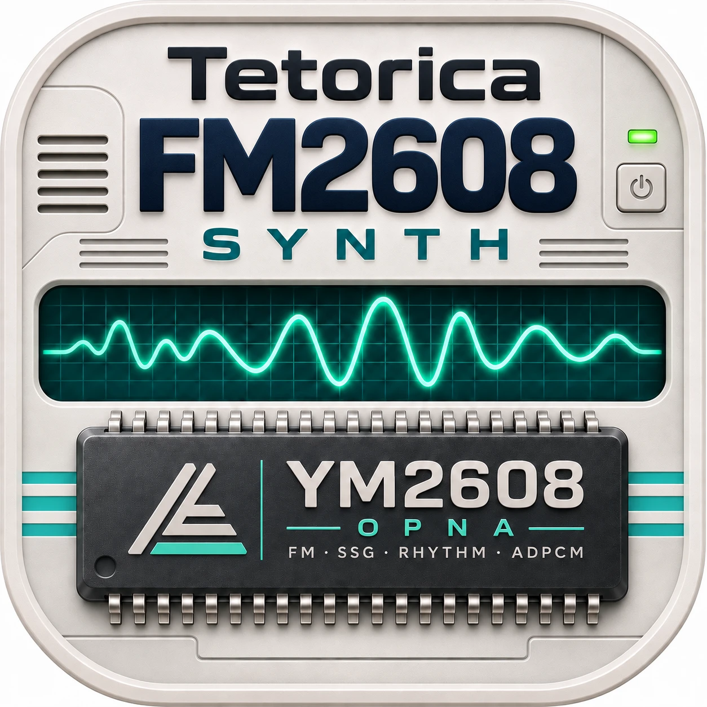

Tetorica FM2608 Synth
YM2608 / OPNA · FM · SSG · Rhythm · ADPCM-B
Enable audio, then play the keyboard.
FM · Auto · 6 hardware channels
Live output level after Master volume.
FM · 4 operators
?
Each of six FM channels has four operators and one of eight algorithms. In the routing expression, arrows show modulation and + combines signals. OP colors match the control rows and envelope guides. TL controls operator attenuation. AR, D1R, D2R, SL and RR shape its envelope, and RS changes envelope rates with pitch. AM, AMS and PMS use the shared hardware LFO. SSG-EG is an FM envelope feature. The separate SSG tab controls OPNA's three square-wave channels.
Operator envelope
Shared hardware LFO
CH3 special mode / CSM
SSG · Tone + Noise
?
Each of three SSG channels mixes Tone and Noise. Noise period and the hardware envelope are shared by all three channels. Enabling Envelope routes the shared envelope to this channel's volume. Writing its shape restarts the shared envelope. SSG has mono output.
Shared noise
Shared hardware envelope
Rhythm · 6 fixed sounds
?
The six hardware rhythm voices use the bundled Tetorica synthetic rhythm ROM. Each voice has its own hardware level and left / right output gates. Level is a register value. In Auto, each pad shows a keyboard key that triggers its voice. Selecting a physical voice sends all note keys to that voice. Clicking a pad always triggers its named sound.
Tetorica synthetic rhythm ROM · BSD-3-Clause
ADPCM-B · 1 sample voice
?
Audio is downmixed to mono and encoded as YM2608 ADPCM-B. Root note is a software tuning reference. Base rate sets the playback speed at Root note. Keyboard notes transpose this rate, and Playback shows the current hardware rate. Repeat loops the complete selected sample. The memory range is aligned to 32 encoded bytes. Drawing re-encodes the sample on release.
Mixer
?
Software output levels are shared by Keyboard, Code and reference playback. FM, Rhythm and ADPCM share one stereo output bus. SSG has its own mono bus. Channel buttons mute the output while retaining source settings. Master applies after both output buses.
YM2203 mode multiplies SSG by 0.75 to match Tetorica's calibrated YM2203 balance. Loading a YM2203 song enables it automatically. While enabled, the selected YM2203 VGM's FM and SSG volume entries also apply. Manual output levels multiply these adjustments. Changes follow the normal audio buffer latency.
YM2203 correction Off
Effective output · FM ×1 · SSG ×1
Software performance · same OPNA as the controls above. Run Ctrl/Cmd+Enter · Apply Ctrl/Cmd+Shift+Enter.
Code saves in Files.
Console
?
Use const opna = await useSoundChip("ym2608"). FM is on the main object; SSG, Rhythm and ADPCM are available as opna.ssg, opna.rhythm and opna.adpcm. Code addresses physical channels. Apply retains context and named loops. Keyboard input remains available while Code runs; click outside the editor to play. liveFx is a software effect after the hardware output.